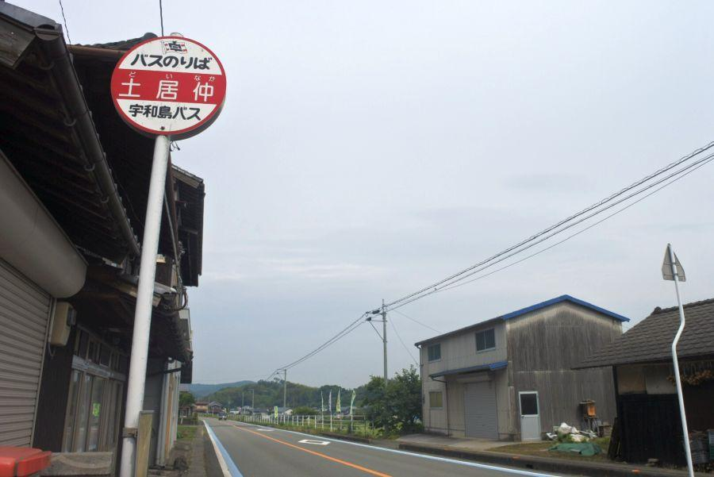

ユニークな名前のバス停 < 土居仲、嵐 / 愛媛県 >

世の中には面白い名前の地名がたくさんあります。
愛媛県南部、南予地方にあるユニークな名前のバス停の紹介です。
そこまで田舎ではないのだけれど...
土居仲バス停(愛媛県宇和島市三間町土居中)
バス停・字(あざ)名共に "どいなか"
確かに郊外ではあるけれど、 "ド田舎" とまでは言い過ぎ。勿論由来はそこではありません。
昔々、この地を治めた戦国武将・土居清良(どいきよよし / せいりょう)に由来。
隣り合う土佐(高知)から、または海を渡れば近い豊後(大分)から度々侵略が行われたが、それらをことごとく撃退している智将。また中国地方の毛利氏に功があった関係で、豊臣秀吉による天正の四国攻めに際しては、小早川隆景(こばやかわたかかげ・毛利三兄弟の一人)から領地を安堵されている。
土居清良は農業を重要視した事でも知られ、その一生を記した清良記(せいりょうき)には 農書としての記述があり、日本最古の農書と名高い。
土居仲集落がある三間盆地は 愛媛県の中で農業が盛んな地域であり、清良は "清良神社" に祀られ、今も人々の信仰を集めている。
バスでの訪問はもちろん、務田駅・伊予宮野下駅から徒歩で来ることが可能。
土居仲バス停がある場所に隣接して 黒田かまぼこさんがあるので、自家用車での訪問も可能。
訪問の記念やバスの待ち時間に、ご当地グルメ・揚げたての "じゃこてん" がお勧め。美味しいです。
黒田かまぼこ ※ 土居仲バス停の地点登録が無いので、隣接の施設を表示しています
< 自家用車 >
高松駅から 約3時間、226km
松山空港から 約1時間30分、88km
< 路線バス >
JR宇和島駅 → 宇和島バス → 土居仲停留所下車
< 鉄道 >
JR宇和島駅 → 予土線 → 務田駅・伊予宮野下駅下車 どちらも徒歩約20分、1.8km
※ 主な地点からの最速・最短距離
人気グループと同じ名前の集落

嵐バス停(愛媛県宇和島市津島町嵐)
土居仲と同じ宇和島市だけれど、こちらは海のそば。
地名の由来は、冬になると真っ直ぐ歩けないほど強い季節風(＝嵐)が吹くことから。
起点となる愛媛県の宇和島 / 高知県の宿毛から出るバス便は多い。
自家用車の場合 国道56号に面した場所なので、四国一周の際などで通ることができる。
上り(宇和島方面)バス停の前には松があり、 "嵐のマツ" として ファンの間で有名な木だそうです。
近くには "嵐" 郵便局があり、ここを訪れた時は「嵐からの手紙」を出すことがお約束。
住民の方々にとっては 何の変哲もないバス停ですが、楽しみ方は様々です。
清家たばこ店 ※ 嵐バス停の地点登録が無いので、隣接の施設を表示しています
< 自家用車 >
高松駅から 約3時間10分、252km
松山空港から 約1時間50分、115km
< 路線バス >
JR宇和島駅 もしくは 土佐くろしお鉄道宿毛駅 → 宇和島バス → 嵐停留所下車
※ 主な地点からの最速・最短距離